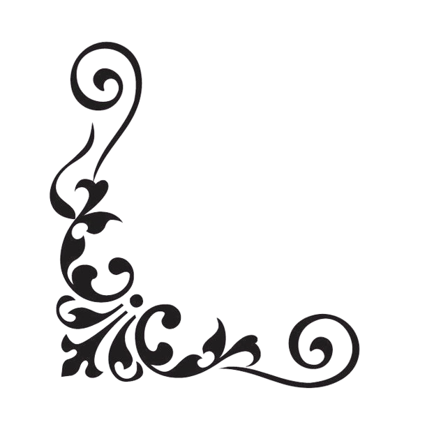

Szafta Temetkezés
Ajánlataink
Koporsók
Sírkövek
Koszorúk
Vegye fel velünk a kapcsolatot!
Ajánlataink
Koporsók
Sírkövek
Koszorúk
Vegye fel velünk a kapcsolatot!

Mi a bajban Ön mellett állunk!
Méltósággal és diszkréten bánunk az elhunyt személlyel, mert úgy gondoljuk, hogy a végtisztesség minden embernek veleszületett joga.
Ajánlataink
Koporsók széles választékon
Gyászjelentés elkészítése
Elhunyt elszállítása
Koszorúk, koporsódíszek élővirágból
Padmaly lap betonból
Sírásás és hantolás
Sírkeretek összerakása
Temetkezési segély intézése Ön helyett
Koporsók
A széles választékú koposóink kozött talál:
Fenyőfából
Bükkfából
Nyárfából
Cserefából
készült koporsókat.
A koporsók ára
1900RON
tól
3400RON
ig terjed
Lapozza végig a képtárunk itt talál néhány példát
Sírkövek és sírlapok
Tőlünk jó minőségű sírköveket és sírélapokat is tud vásárolni
A sírásást és a sírkeretek összerakását vállaljuk
Lapozza végig a képtárunk itt talál néhány példát
Koszorúk és koporsódíszek
Tőlünk jó minőségű koszorúkat és koporsódíszeket is tud vásárolni
Lapozza végig a képtárunk itt talál néhány példát